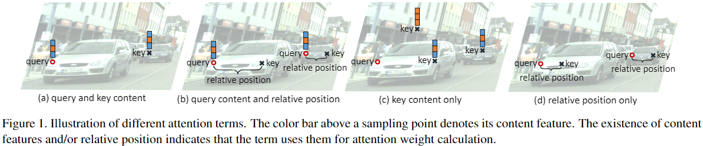
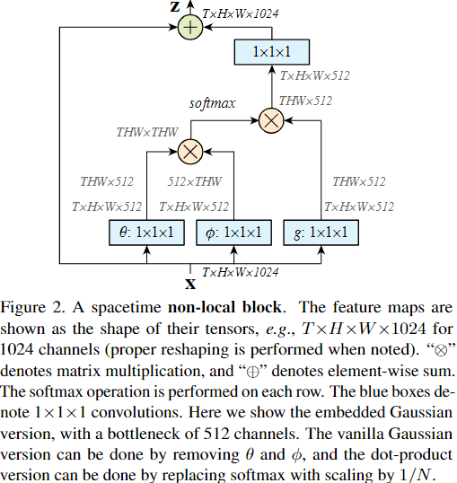
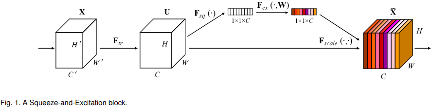
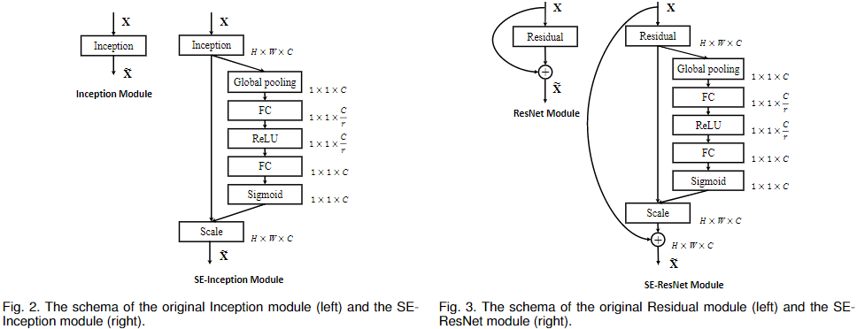
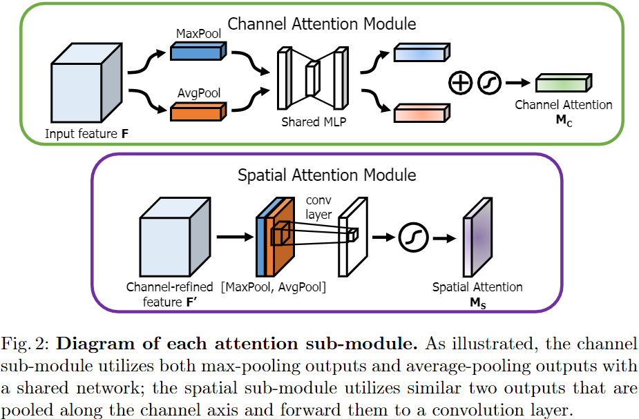
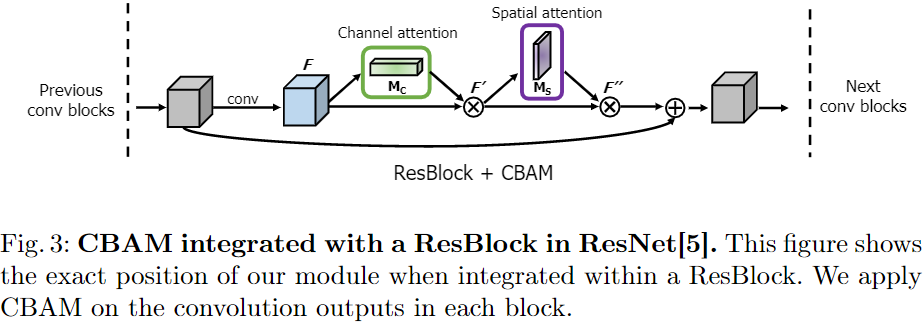

Attention机制最初是在自然语言处理领域取得了巨大成功，现在CNN中也在越来越多的使用Attention机制，这里就CNN中使用的Soft Attention（其中Attention weight是模型产生，可微可学习）做一些总结。
对Attention的理解
Attention使得神经网络（NN）可以更多的关注当前任务相关的输入（不一定是原始输入，也可能是提取出的特征），同时忽略和当前任务不相关的输入，本质上是希望对不同的信息计算得到不同的权重，以代表不同信息的重要性程度，并通过加权和的方式聚合这些信息。
更抽象来说，在给定一个query元素的情况下，Attention机制的作用是：根据query元素将不同的key元素按照相关程度（或者重要程度）排序，在产生一个输出时，让模型可以选择哪些输入更加重要。这里query元素和key元素暂时没有合适的定义，不过可以通过两个例子来理解，例如在语言翻译问题中，这里的query element可以理解为输出语句中的某个单词，key element则是输入的语句中的某个单词，对于某个翻译得到的单词，不是每个输入单词都和其相关（或者说不是每个输入单词和这个翻译得到的单词的相关程度都一样），又例如在CNN中，query和key都可以理解为图像上某个像素或者某个区域。
在论文《An Empirical Study of Spatial Attention Mechanisms in Deep Networks》中提出了广义注意力机制的表达式（Generalized attention formulation），如下所示，其中$y_q$表示最终得到的Attention feature（通过Attention机制聚合得到的特征或者信息），$q$表示query元素的位置，$k$表示key元素的位置，$M$表示Attention Head的个数（不同的Attention Head可以理解为不同的Attention计算方式），$z_q$表示位置为$q$的query元素的内容，$x_k$表示位置为$k$的key元素的内容，$A_m$表示计算Attention weight的函数，$W_m$和$W’_m$表示两个可学习参数，这两个参数也可以去掉（即设置为固定值），$\Omega_q$表示query元素可以涉及到的key元素的范围（例如翻译任务中，一般这个范围是整个输入语句的所有单词）
上面的公式中$W’_m x_k$可以理解为首先对key元素做一个投影变换，得到合适的特征，然后$A_m$函数针对范围$\Omega_q$中的每个key元素$x_k$计算出其Attention weight（这个attention weight一般和q, k, z_q, x_k这几个值有关，但有些计算方式不会全部使用），按照Attention weight对key元素的投影进行一个加权求和，最后再进行一次投影变换，得到合适的Attention 特征，这就完成了一种Attention的过程，但是有些时候可以多种Attention一起使用，因此可以$M$种Attention feature求和得到最终的Attention feature。
根据上面的广义注意力机制表达式，设计一个注意力机制时，需要确定的内容就是一下几点：
- $\Omega_q$，一个query元素可以涉及到的key元素的范围。
- $A_m$，计算Attention weight的函数。
- $W_m$、$W’_m$，是否需要进行特征投影变换。
Self-Attention
Self-Attention是指query元素和key元素来自于同一个集合的Attention，CNN中的Attention基本上都是Self-Attention，例如《Non-local Neural Networks》、《CBAM: Convolutional Block Attention Module》这些论文中使用的Attention，其query和key元素都是特征图上的像素，属于同一个集合，因此都属于Self-Attention的范围。
在论文《An Empirical Study of Spatial Attention Mechanisms in Deep Networks》中提到了几种Self-Attention的计算方式，如下图所示，这里有四种Attention weight的计算方式：
- query and key content表示仅仅使用$z_q$和$x_k$来计算Attention weight，一般其Attention weight正比于query content和 key content之间的相似性。
- query content and relative position表示使用$z_q$和$k,q$来计算Attention weight。
- key content only表示仅使用$x_k$来计算Attention weight。
- relative position only表示仅使用$k,q$来计算Attention weight。

不同的Attention机制在广义Attention表达式上的表示
Transformer attention
在论文《Transformer-xl: Attentive lan-guage models beyond a fixed-length context》中使用了4个Attention Head，包含了上面提到的Self-Attention的四种计算方式，论文《An Empirical Study of Spatial Attention Mechanisms in Deep Networks》中对其进行了总结，如下：
- query and key content方式计算得到的Attention weight可以表示为$z_q^TU^T_mV^C_mx_k$，其中$U_m$和$V^C_m$表示可学习的嵌入矩阵，用于将query content和key content转换到合适的空间方便计算，或者缩减维度以减少计算量。
- query content and relative position方式计算得到的Attention weight可以表示为$z_q^TU^T_mV^R_mR_{k-q}$，这里的$R_{k-q}$表示相对位置$k-q$的一种编码，$V^R_m$同样是一个可学习的嵌入矩阵。
- key content only方式计算得到的Attention weight可以表示为$u_m^TV_m^Cx_k$，其中$u_m$是个可学习的向量，用于捕获对当前任务贡献突出的key content的编码。
- relative position only方式计算得到的Attention weight可以表示为$v^T_mV^R_mR_{k-q}$，这里的$v_m$也是个可学习的向量，用于key元素和query元素的全局位置偏差。
Regular and deformable convolution
常规卷积和可变形卷积都可以看做一种注意力机制。
在常规卷积中，Attention weight的计算函数$A_m$属于上面提到的relative position only方式，可以表达为如下形式，这里的$Q$表示卷积核覆盖的区域。这样的$A_m$实际上是一种基于query和key元素相对位置的函数，计算Attention weight的过程不需要$z_q$和$x_k$的值，计算出来的Attention weight只是指定哪些位置和query相关。
另外，常规卷积相当于只有一个Attention head，因此$M=1$，$\Omega_q$可以是整个特征图上的所有像素，的卷积核参数可以看成是$W_0$，常规卷积没有$W’_0$，key元素则是输入的特征图上的像素点$x_k$，因此常规卷积可以看做Attention的一种特例。
对于可变形卷积，其$A_m$函数可以表达如下，其中$w_m^T$表示用于计算偏移的$1\times 1$卷积的参数，$p_m$表示正常卷积相对于卷积核中心的偏移，$q + p_m + w_m^T x_q$实际上就是可变形卷积首先计算得到的卷积核偏移值，而$G$是插值函数，表示在插值过程中，对于需要插值的位置$q + p_m + w_m^T x_q$计算得到的位置$k$的权重，因此可变形卷积的插值权重可以理解为Attention weight，所以可变形卷积核常规卷积一样，也可以看做是一种Attention。
CNN中的一些Attention
Non-local Neural Networks
在论文《Non-local Neural Networks》中，提出了一种称为Non-local Neural Networks的结构，通过将某一位置的响应计算为所有位置特征的加权和的方式，用于捕获远程依赖，其表达式如下，其中$i$是响应的位置，$j$则遍历所有输入的位置，（这里的位置可以包含空间和时间，因此Non-local Neural Networks可以用于处理视频），$x_i$表示响应位置的输入值，$x_j$则可以遍历所有输入元素的值，$f(x_i, x_j)$计算得到一个标量，用于表示$x_i, x_j$之间的关系，例如相关程度，$g(x_j)$则表示对$x_j$的一种表示，例如一种投影，$C(x)$表示归一化系数，$y_i$是最终得到的输出。
Non-local Neural Networks的结构示意图如下所示，其中$H,W$表示空间上的范围，$T$表示时间上的范围，这里的示例输入形状是$T\times H \times W \times 1024$，如果是视频处理的话，即表示一共处理相邻的$T$帧特征图，每幅特征图高$H$，宽$W$，channel个数为1024，上面表达式中的$f(x_i, x_j)$由下图中的$\theta(x) \times \phi(x)$来完成，归一化则由softmax操作来完成，softmax的结果和$g(x)$的结果相乘，就完成了“所有位置特征的加权和操作”，得到响应$y$，表示捕获到的远程依赖，这样一来，$y$中每个特征值都聚合了全局的信息，再进行一些处理转换，最终和原始输入相加得到输出Z。

上图中的$y$最终还经过了一次$1\times 1\times 1$卷积得到$z$，因此可以表达为：$z_i = W_z y_i + x_i$，这里论文中将$W_z$初始化为0，且加上$x_i$这一项，其原因是为了在改变网络结构之后，还可以利用之前的预训练权重。
整个Non-local Neural Networks过程虽然简单，但是也是Self-Attention的一种特例，类比之前提到的广义注意力机制表达式，这里只有一个Attention Head，$M=1$，$i$可以看做query元素的位置，$j$则是key元素的位置，query元素和key元素都属于同一个集合（即输入x），$x_i$表示query content，$x_j$则表示key content，$f(x_i, x_j)$则是query and key content方式的$A_m$函数（$A_m$计算得到的Attention weight是归一化的，因此$A_m$还包括$\frac{1}{C(x)}$用于归一化）。$g(x_j)$是对key content的一种变换，其参数就是前面的$W’_m$，最后这里没有$W_m$，softmax的结果和$g(x)$的结果进行的矩阵乘法完成了特征加权和的操作。
Squeeze-and-Excitation Networks（SE Network）
在论文《Squeeze-and-Excitation Networks》中，提出了一种用于channel attention的Squeeze-and-Excitation（SE）结构，通过显式地建模通道之间的相互依赖关系，自适应地重新修正不同通道的特征响应幅度，其结构示意图如下所示。其中$F_{sq}$表示Squeeze操作，在论文中使用一个全局平均池化来实现，用于在空间维度上来聚合全局的信息，变成一种逐通道的表示状态。之后的$F_{ex}$表示Excitation操作，其操作顺序为（全连接-ReLU-全连接-Sigmoid，这里没看懂可以参考下面在InceptionNet和ResNet中的详细结构），用于捕获通道之间的依赖性关系，并且形成通道的权重。最终将得到的各通道权重分别乘以原来的通道，达到对不同通道的响应幅度进行自适应修正的目的。

论文中在InceptionNet以及ResNet中都尝试加入SE模块，其加入之后的结构如下图所示。其中Global pooling即Squeeze操作，用于聚合超出像素点感受野之外的信息并形成逐通道的表示，后面紧接着Excitation操作，首先通过全连接对其进行降维，减少计算量，之后使用ReLU激活函数来增加Excitation操作的非线性性质，之后再通过一个全连接层得到逐通道的channel weight，并通过Sigmoid函数将channel weight限制在0到1之间，最后将channel weight与原始特征图相乘，每个通道一个权重，用于调整不同通道的响应幅值。

Excitation操作很容易和之前的广义注意力机制表达式类比，其本质上就是一种简单的Self-Attention，只不过Excitation操作计算出的Attention weight除了query位置以外全是0，这样就不是按照权重去聚合所有通道的信息，而是使用空间维度的全局信息来调整通道的响应幅值。
Convolutional Block Attention Module
论文《CBAM: Convolutional Block Attention Module》中提出了一种同时进行channel和spatial attention的attention模块，称为CBAM。
CBAM中包含了两种Attention，如下图所示，上面的结构是channel Attention部分，其接收输入之后分别通过空间维度上的全局最大池化和全局平均池化，和SE模块中的Squeeze类似，只不过这里使用两种池化，得到了两个结果，这两个结果再送到同一个MLP（多层感知机），这里相当于两个共享权重的Excitation操作，最后两个结果相加在进行sigmoid操作，这里可以看出来，整个Channel Attention过程其实就是稍微改变的SE模块。图片下面的结构是Spatial Attention的结构，这里的最大池化和平均池化是在Channel维度进行的，即对每个像素求出所有Channel的最大值或者平均值，最终得到两个Channel数量为1的特征图，两个特征图进行Concatenate之后经过一个$7\times7$卷积，最后使用sigmoid函数处理得到结果，这两个模块得到的结果都是用于和原始特征图相乘，一个是逐通道的调整特征响应的幅值，一个是逐像素的调整特征响应的幅值。

上面展示的两种结构在模型中先后使用，可以使得模型包含对不同channel响应幅度的调整能力的同时也包含对不同位置响应幅度的调整能力，在ResBlock中添加CBAM结构之后，模型的结构如下图所示。

在该论文的实验中，CBAM模块在图像分类任务上提升不大，但是使用轻量级模型（MobileNet，ShuffleNet）试验时错误率相对于SE模块有一个百分点左右的下降（可能是参数增加，模型容量增大导致？），在目标检测任务上，ResNet+CBAM相比于原始的ResNet有一点几个百分点的mAP提升。